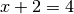

Structures¶

-
class
flare.struc.Structure(cell, species, positions, mass_dict=None, prev_positions=None, species_labels=None)¶ Contains information about a structure of atoms, including the periodic cell boundaries and atomic species and coordinates.
Parameters: - cell (np.ndarray) – 3x3 array whose rows are the Bravais lattice vectors of the cell.
- species (List) – List of atomic species, which are represented either as integers or chemical symbols.
- positions (np.ndarray) – Nx3 array of atomic coordinates.
- mass_dict (dict) – Dictionary of atomic masses used in MD simulations.
- prev_positions (np.ndarray) – Nx3 array of previous atomic coordinates used in MD simulations.
- species_labels (List[str]) – List of chemical symbols. Used in the output file of on-the-fly runs.
-
get_cell_dot()¶ Compute 3x3 array of dot products of cell vectors used to fold atoms back to the unit cell.
Returns: 3x3 array of cell vector dot products. Return type: np.ndarray
-
static
raw_to_relative(positions, cell_transpose, cell_dot_inverse)¶ Convert Cartesian coordinates to relative coordinates expressed in terms of the cell vectors.
Parameters: - positions (np.ndarray) – Cartesian coordinates.
- cell_transpose (np.ndarray) – Transpose of the cell array.
- cell_dot_inverse (np.ndarray) – Inverse of the array of dot products of cell vectors.
Returns: Relative positions.
Return type: np.ndarray